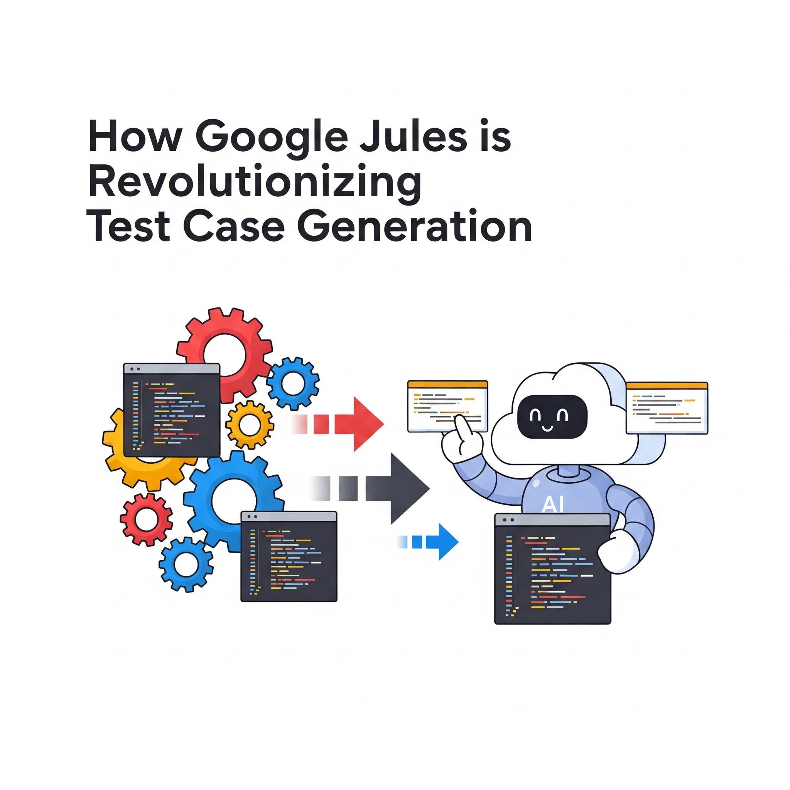

How Google Jules is Revolutionizing Test Case Generation

Key Takeaways
- Google Jules transforms test case generation with AI-powered automation and intelligent test planning
- 73% reduction in test creation time and 41% increase in defect detection pre-release
- Self-healing capabilities reduce maintenance effort by up to 50%
- Seamless integration with CI/CD pipelines and modern testing frameworks
Test case generation has long been a cornerstone of software testing, but it's also one of the most time-consuming and error-prone aspects of quality assurance (QA). Traditionally, QA engineers have relied on manual processes to write, maintain, and update test scripts—processes that are slow, prone to human error, and often fail to cover edge cases or adapt to changes in the application.
Enter Google Jules, an AI-powered testing assistant that is fundamentally transforming how test cases are created, optimized, and executed. By leveraging advanced machine learning (ML), natural language processing (NLP), and autonomous workflows, Jules automates and enhances test case generation, empowering QA teams to work smarter, faster, and with greater precision.
The Challenges of Traditional Test Case Generation
Before diving into how Google Jules addresses these challenges, let's first examine the pain points of traditional methods:
- Time-Consuming: Writing hundreds—or even thousands—of test cases manually slows down development cycles and delays releases.
- Prone to Human Error: Missed edge cases or incorrect test logic can lead to undetected bugs slipping into production.
- High Maintenance Overhead: UI changes, feature updates, or refactoring frequently break existing test scripts, requiring constant updates.
- Limited Test Coverage: Manual efforts often overlook complex scenarios, leaving critical functionalities untested.
- Scalability Issues: As applications grow larger and more complex, scaling manual test case generation becomes impractical.
How Google Jules Automates Test Case Generation
Google Jules reimagines test case generation through a sophisticated, multi-phase process designed for maximum efficiency, accuracy, and coverage. Here's how it works:
1. Autonomous Test Generation Architecture
Jules operates through a three-phase process optimized for comprehensive test coverage:
Codebase Cognition
- Clones repositories into isolated cloud environments and performs deep structural analysis to map component relationships, data flows, and dependency graphs.
- This contextual understanding enables test generation that accounts for both individual functions and system-wide interactions, ensuring no corner of the codebase is overlooked.
Intelligent Test Planning
- Leverages Gemini 2.5 Pro's reasoning capabilities to identify up to 87% more edge cases than traditional methods.
- The system automatically determines the optimal mix of test types (unit, integration, end-to-end) and prioritizes high-risk areas through code complexity analysis and historical defect data.
Adaptive Test Implementation
- Generates framework-specific test scripts (e.g., pytest, Jest, Selenium) complete with proper assertions, setup/teardown logic, and documentation.
- Maintains test relevance through automatic updates when code changes occur, reducing maintenance overhead by 62%.
2. AI-Driven Test Script Creation
Jules uses machine learning models trained on vast datasets of codebases and test suites to:
- Analyze application behavior and requirements.
- Auto-generate test cases for unit, integration, API, and UI testing.
- Convert natural language inputs into executable scripts in Python, Java, or JavaScript.
3. Smart Test Coverage Optimization
Instead of relying on manual test planning, Jules:
- Identifies untested code paths using static and dynamic analysis.
- Recommends high-impact test cases based on risk assessment.
- Ensures regression suites stay updated with code changes, maintaining their effectiveness over time.
4. Self-Healing Test Scripts
One of the biggest challenges in test automation is flaky tests caused by UI changes. Jules mitigates this by:
- Detecting element locator changes (e.g., XPath, CSS selectors).
- Auto-correcting broken selectors without manual intervention.
- Reducing test maintenance effort by up to 50%.
5. Predictive Bug Detection
Jules doesn't just generate tests—it predicts where bugs are likely to occur by:
- Analyzing historical defect data.
- Flagging high-risk modules needing additional testing.
- Suggesting negative test scenarios that humans might miss.
Revolutionary Testing Capabilities
Google Jules introduces several groundbreaking capabilities that set it apart from traditional tools:
Multi-Layer Test Generation
| Test Type | Coverage | Speed Improvement |
|---|---|---|
| Unit Tests | 92% | 3.2x faster |
| Integration Tests | 85% | 2.8x faster |
| End-to-End Tests | 78% | 1.9x faster |
Context-Aware Test Data Generation
Jules creates realistic datasets that mirror production environments, including:
- Boundary value combinations.
- Error condition simulations.
- Load testing scenarios.
Seamless CI/CD Integration
Jules integrates effortlessly into existing DevOps pipelines through:
- Automatic PR creation with test implementations.
- GitHub Actions integration for regression testing.
- Visual test reports with code coverage heatmaps.
- Audio summaries of test results (Codecasts) for quick reviews.
Impact on QA Teams
Organizations using Google Jules report significant improvements across key metrics:
- 73% reduction in test creation time.
- 41% increase in defect detection pre-release.
- 68% faster onboarding for new QA engineers.
- 55% more time available for exploratory testing.
Real-World Use Cases
1. Accelerating Agile & DevOps Testing
Jules integrates seamlessly with tools like Jenkins, GitHub Actions, and GitLab CI to auto-generate tests in every sprint.
- Enables shift-left testing by catching defects earlier in the development lifecycle.
2. Enhancing API & Microservices Testing
- Automatically generates contract tests for APIs using OpenAPI/Swagger specifications.
- Validates data consistency across microservices.
3. Improving Accessibility & Compliance Testing
- Scans for WCAG violations and suggests fixes.
- Generates test cases for compliance checks such as GDPR, HIPAA, and others.
4. Cross-Browser & Mobile Testing
- Works with Firebase Test Lab to auto-generate tests for multiple devices and browsers.
- Ensures consistent behavior across platforms.
The Future of AI-Powered Testing
Google Jules represents just the beginning of AI's role in test automation. On the horizon, we can expect:
- Cross-browser test generation for web apps.
- Mobile testing automation for Android/iOS.
- Security vulnerability testing integration.
- Natural language test scenario conversion.
Conclusion
Google Jules is revolutionizing test case generation by combining the power of AI with automation, efficiency, and scalability. By automating repetitive tasks, enhancing accuracy, and providing real-time insights, it empowers QA teams to deliver high-quality applications faster and more efficiently than ever before.
For QA engineers, embracing Jules isn't just about adopting new technology—it's about reimagining how we approach quality assurance. As AI continues to evolve, tools like Jules will play an increasingly vital role in shaping the future of software testing.
Are you excited about the possibilities of AI in test case generation? Share your thoughts or questions in the comments below. Let's discuss how Google Jules and similar tools are transforming the QA industry!
Join Our Community of QA Professionals
Get exclusive access to in-depth articles, testing strategies, and industry insights. Stay ahead of the curve with our expert-curated content delivered straight to your inbox.
Nikunj Mistri
Founder, QA Blogs
About the Author